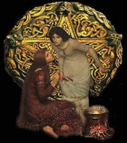

A Magia é a ciência
dos segredos da Natureza. Para que ela funcione apropriadamente,
um Bruxo deve trabalhar sempre em perfeita harmonia com as Leis
da Natureza e da psique. Magia é a ciência e a Arte.
Ao contrário do que as pessoas pensam, Magia não
é fazer Rituais que interfiram na vida das pessoas, mas
sim trabalhar com as energias da Natureza, do Universo e do próprio
homem. Com o equilíbrio dessas energias vivemos em harmonia
com a vida. A Magia é mais antiga que o Cristianismo, sendo
a principal filosofia de diversas civilizações antigas.
Na Magia existem vários tipos de Sistemas
e Níveis diferentes. Sendo assim, o estudo da magia exige
uma grande dedicação para ter-se um bom conhecimento.
A Alta Magia é muito confundida com a Teurgia,
mas a Alta Magia trata da Magia Utilizável e a
Teurgia trata da Magia Existente. A religião,
em suas manifestações exteriores, não seria
outra coisa além da Alta Magia Cerimonial. Por
isso muitas pessoas comparam a religião e a Alta Magia.
Dentre as mais difundidas, a Alta Magia repousa sobre o princípio
de que, na natureza, há forças ocultas que são
denominadas fluidos. Esses fluidos são de três naturezas:
As energias consideradas pela Alta Magia podem
ser utilizadas sob quatro formas:
A - Microcosmo:
1º - O homem atuando sobre si mesmo.
2º - O homem atuando sobre o seu mundo exterior.
(Se referem aos fluidos de que o homem pode dispor)
B - Macrocosmo:
3º - Os fluidos atuando no astro (a Terra).
4º - Os fluidos atuando fora do astro (no
sistema solar).
(Se referem aos fluidos espalhados na natureza)
Cada uma das quatro formas podem funcionar de duas
maneiras:
Classificações
da Magia
- A Teurgia, ou Magia Iniciática
- é muito secreta e desconhecida por exigir do operador
aptidões excepcionais;
- A Alta Magia, ou Magia Usual
- exige um desenvolvimento intelectual juntamente com o desenvolvimento
psíquico cuja utilidade se impõe;
- A Feitiçaria,
que a maioria dos buscadores toma pela Magia única ou original
- emprega meios tradicionalmente transmitidos.
Ao
contrário do que se poderia imaginar, as operações
que não exigem dons excepcionais são aquelas classificadas
entre as mais elevadas em Alta Magia. As operações
que exigem do operador aqueles dons excepcionais encaixam-se mais
particularmente no quadro da Magia Comum, do qual faz parte a
Magia Pessoal.
A operação mágica consiste
no emprego de uma forma de energia cósmica, com a finalidade
de obter-se um resultado, sobre um ponto preciso. Assim, ela implica
um operador. Tal operador pode não ser uma pessoa física,
mas uma pessoa moral e pode ser também uma personificação.
Daí originou-se a Primeira Regra: "Nenhuma operação
mágica pode ser efetuada sem a intervenção
de uma Inteligência". Esta inteligência
aplica-se tanto a um ser humano ou uma coletividade humana, como
a uma personificação de energias ou a uma coletividade
fluídica.
O Mago
e algumas considerações
Atualmente o termo mago é usado para aqueles
que passaram pelas operações mágico-ritualísticas,
de forma prática, então cognominados magistas. O
mago já não precisa de ponto de referência,
ele usa sua vontade para agir e dirigir no mundo da Lua Astral.
O magista, ainda em processo iniciático de desenvolvimento,
requer a ajuda e o treinamento de rituais mágicos com pontos
de referências.
Use a Magia de maneira sábia, cautelosa
e somente de maneira positiva. A Magia é algo muito sério
e nunca deverá ser abusada ou tratada como um jogo de salão
ou brincadeira. Nunca utilize qualquer forma de Magia para manipular
a vontade e/ou as emoções de outra pessoa.
Como o carma retorna por três vezes para
todas as pessoas pelos seus atos nesta vida, seria atitude de
autodestruição para qualquer Bruxo ou Mago utilizar
a Magia Negra para causar danos a alguém. Quando estiver
lançando um encantamento, concentre-se sempre profundamente
e coloque claramente em sua mente aquilo que você precisa
ou deseja.
"Magia
é a Ciência Natural desconhecida"
(Karl
du Prel)
Por
Spectrum